釣魚暴擊率+7.5%，20分鐘
釣魚暴擊率+15%，20分鐘

狩獵暴擊率+7.5%，20分鐘
狩獵暴擊率+15%，20分鐘
採藥暴擊率+7.5%，20分鐘
採藥暴擊率+15%，20分鐘
採藥暴擊率+7.5%，20分鐘
採藥暴擊率+15%，20分鐘
挖礦暴擊率+7.5%，20分鐘
挖礦暴擊率+15%，20分鐘
| 攤販位置 | 位置圖（點擊放大） | 招牌菜（15短陌錢） | 私房菜（50短陌錢） |
|---|---|---|---|
| 元甜甜 - 神仙渡 | 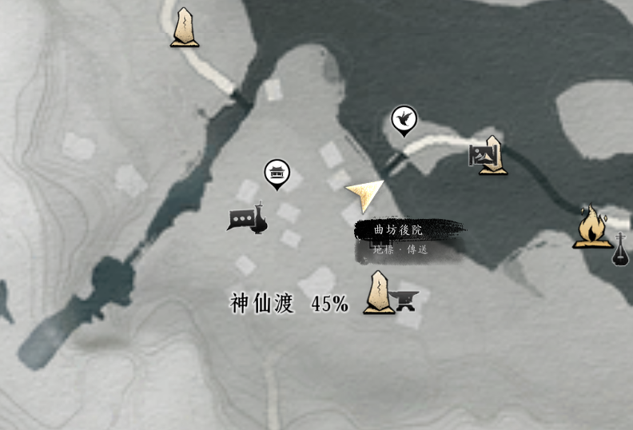 | 蜜汁梨球 釣魚暴擊率+7.5%，20分鐘 | 八寶梨罐 釣魚暴擊率+15%，20分鐘 |
| 元咸咸 - 神仙渡 | | 把子肉 狩獵暴擊率+7.5%，20分鐘 | 酥鍋 狩獵暴擊率+15%，20分鐘 |
| 燕豐子 - 豐禾村 | 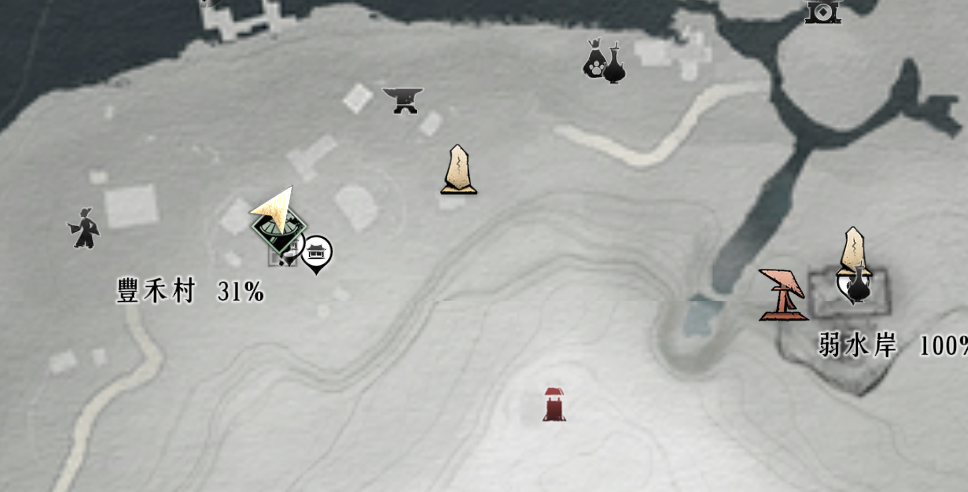 | 醬炒田螺 採藥暴擊率+7.5%，20分鐘 | 螺絲肉 採藥暴擊率+15%，20分鐘 |
| 潘明榮 - 慈心鎮 | 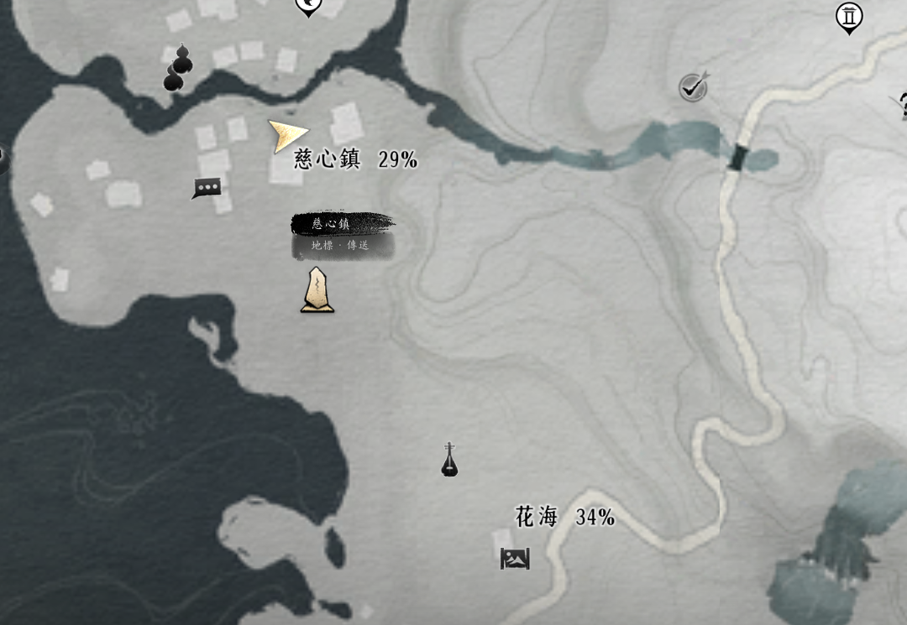 | 棗蒸餅 採藥暴擊率+7.5%，20分鐘 | 七寶蒸餅 採藥暴擊率+15%，20分鐘 |
| 李大娘 - 伏馬莊 | 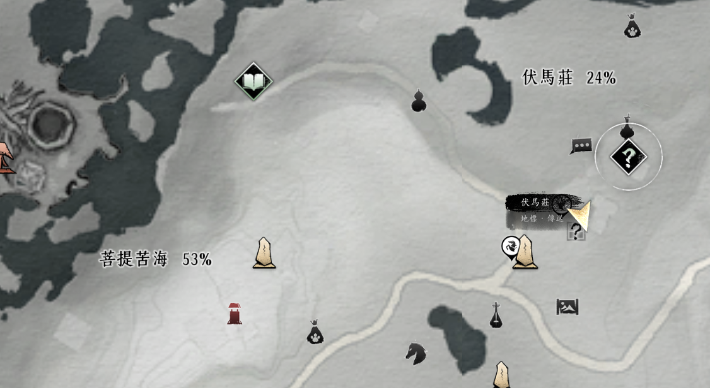 | 馬酥酪 挖礦暴擊率+7.5%，20分鐘 | 辣酥酪 挖礦暴擊率+15%，20分鐘 |
| 攤販位置 | 位置圖（點擊放大） | 招牌菜（15短陌錢） | 私房菜（50短陌錢） |
|---|---|---|---|
| 牛莽 - 角門里 | 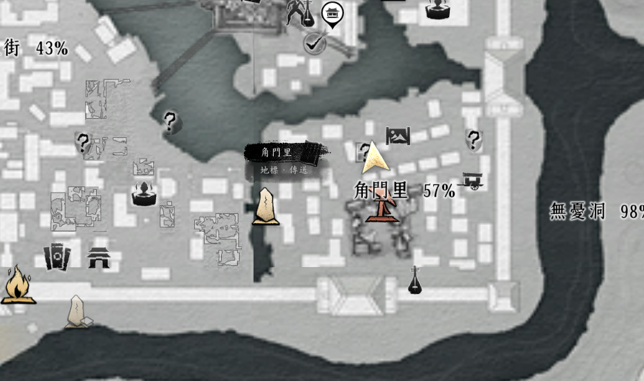 | 麥飯 採藥+10%，10分鐘 | 炒雞麵 採藥+20%，10分鐘 |
| 於不遲 - 南門大街 | 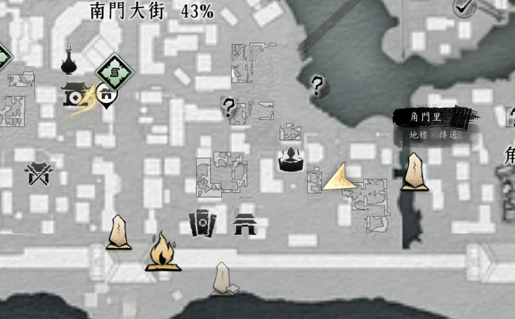 | 鮮魚麵 採藥+10%、挖礦+10%，20分鐘 | 汆魚圓 採藥+20%、挖礦+20%，20分鐘 |
| 沈二 - 南門大街 | 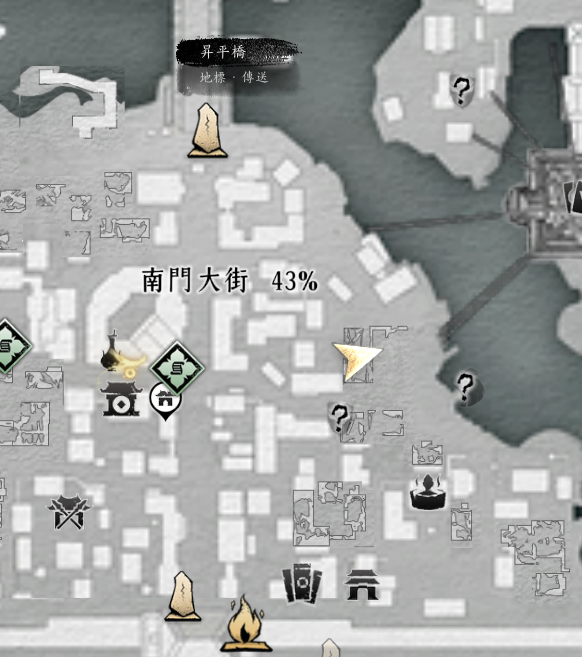 | 柳葉韭 砍伐+10%、挖礦+10%，20分鐘 | 假煎肉 砍伐+20%、挖礦+20%，20分鐘 |
| 夜辛 - 勾欄瓦肆 | 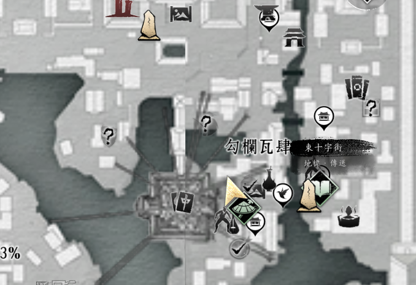 | 批切羊頭 釣魚+10%，10分鐘 | 凍薑醬蹄子 釣魚+20%，10分鐘 |
| 蕭善仁 - 勾欄瓦肆 | 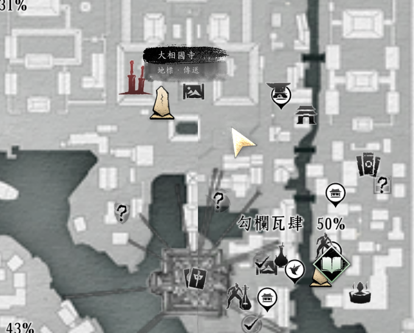 | 茶蘼粥 砍伐+10%，10分鐘 | 七寶素粥 砍伐+20%，10分鐘 |
| 尹千霜 - 勾欄瓦肆 | 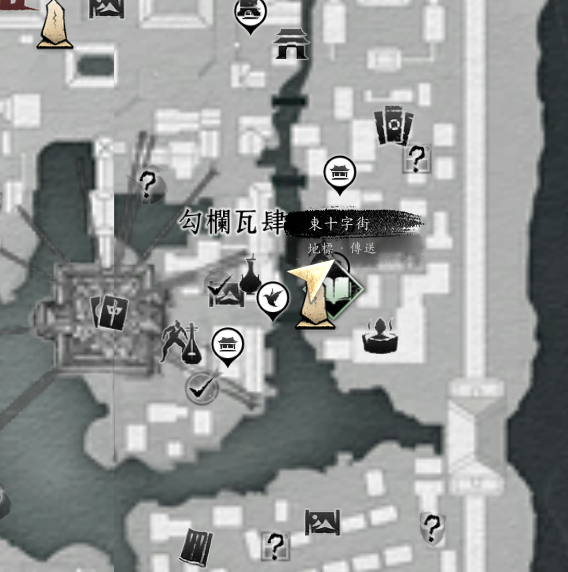 | 豆蔻飲 狩獵+10%，10分鐘 | 水晶皂兒 狩獵+20%，10分鐘 |
| 郝閑 - 鬼市子 | 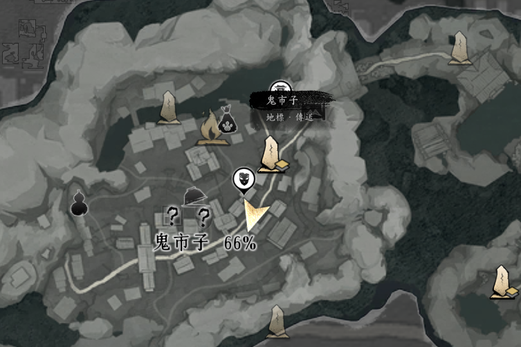 | 黃泉釀 挖礦+10%，10分鐘 | 忘川渡 挖礦+20%，10分鐘 |
| 方甜甜 - 金明池 | 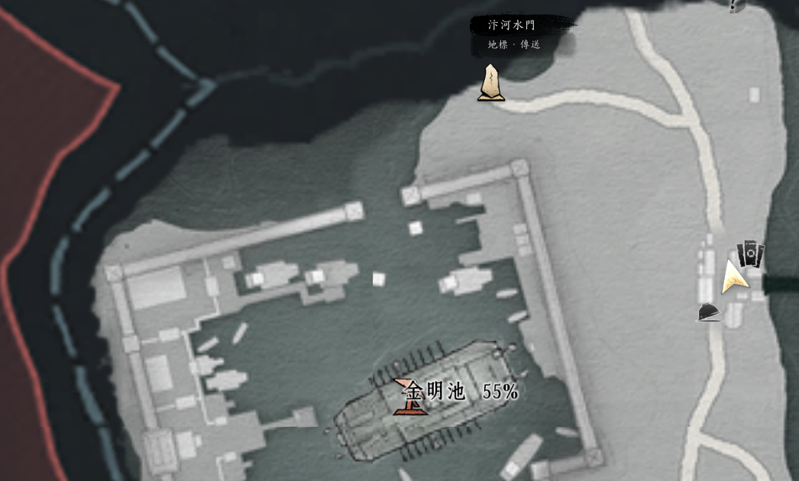 | 葡萄飲子 釣魚+10%、挖礦+10%，20分鐘 | 櫻桃煎 釣魚+20%、挖礦+20%，20分鐘 |
| 大刀陳 - 御苑北 | 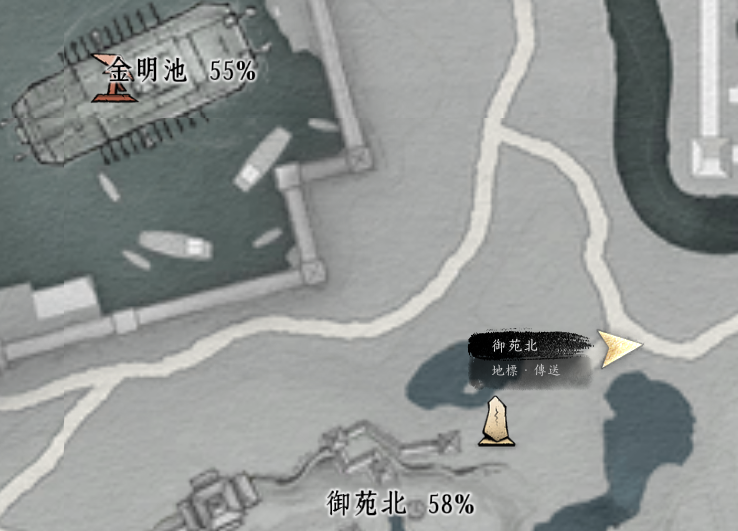 | 銀絲魚脍 採藥+10%、砍伐+10%，20分鐘 | 旋切魚脍 採藥+20%、砍伐+20%，20分鐘 |
| 王其順 - 承恩鎮 | 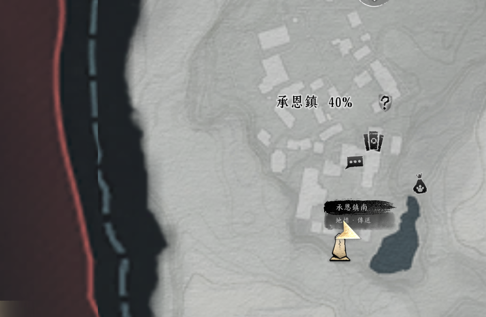 | 筍肉饅頭 狩獵+10%、挖礦+10%，20分鐘 | 通神餅 狩獵+20%、挖礦+20%，20分鐘 |
| 石面 - 承恩鎮 | 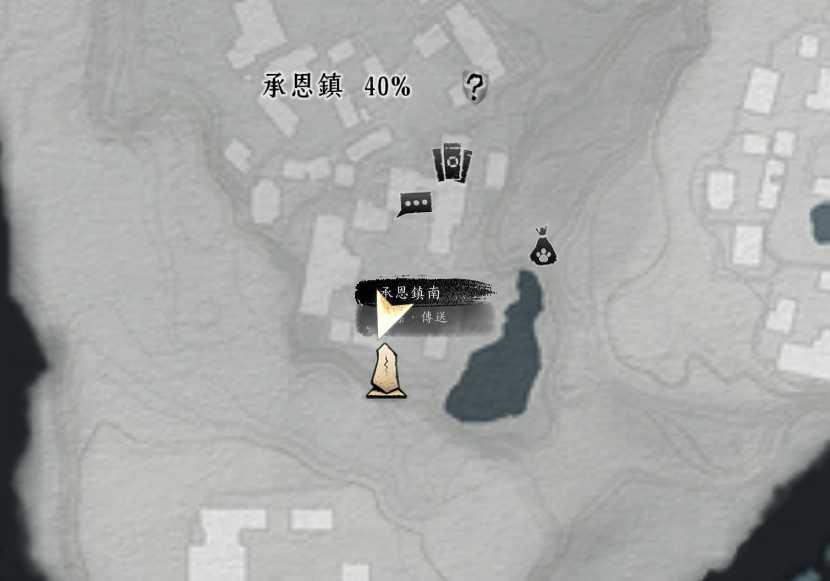 | 蘿菔麵 砍伐+10%、釣魚+10%，20分鐘 | 百合麵 砍伐+20%、釣魚+20%，20分鐘 |
| 湯谷 - 鴻溝古渠 | 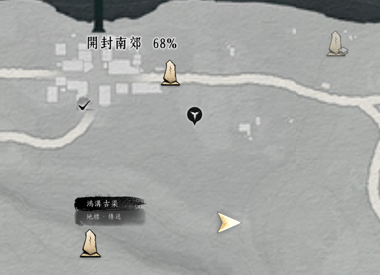 | 冰涼茶湯 採藥+10%、釣魚+10%，20分鐘 | 水飯 採藥+20%、釣魚+20%，20分鐘 |
| 伏苓 - 清心圃 | 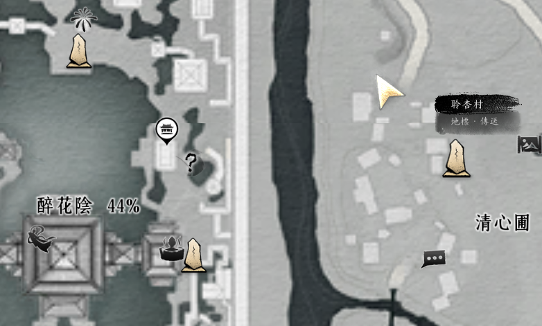 | 金玉羹 採藥+10%、狩獵+10%，20分鐘 | 菊苗煎 採藥+20%、狩獵+20%，20分鐘 |
| 海無量 - 萬勝鎮 |  | 老味胡辣湯 採藥+10%、挖礦+10%，20分鐘 | 兩摻兒 採藥+20%、挖礦+20%，20分鐘 |
| 馬曼兒 - 萬勝鎮 | 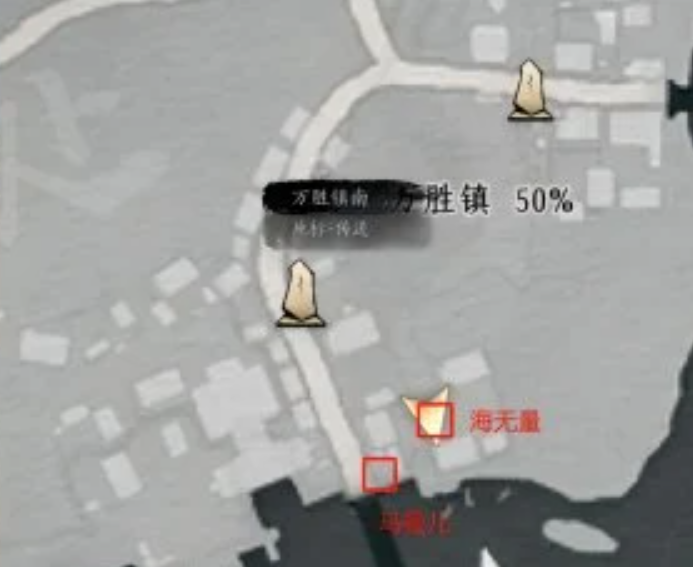 | 蕨菜餛飩 砍伐+10%、狩獵+10%，20分鐘 | 百味餛飩 砍伐+20%、狩獵+20%，20分鐘 |
| 鮮有餘 - 天上來 | 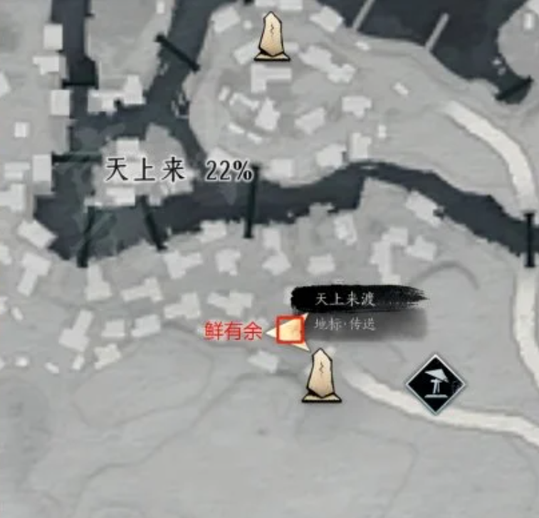 | 醃鹹魚 狩獵+10%、釣魚+10%，20分鐘 | 鮑味鹹魚 狩獵+20%、釣魚+20%，20分鐘 |